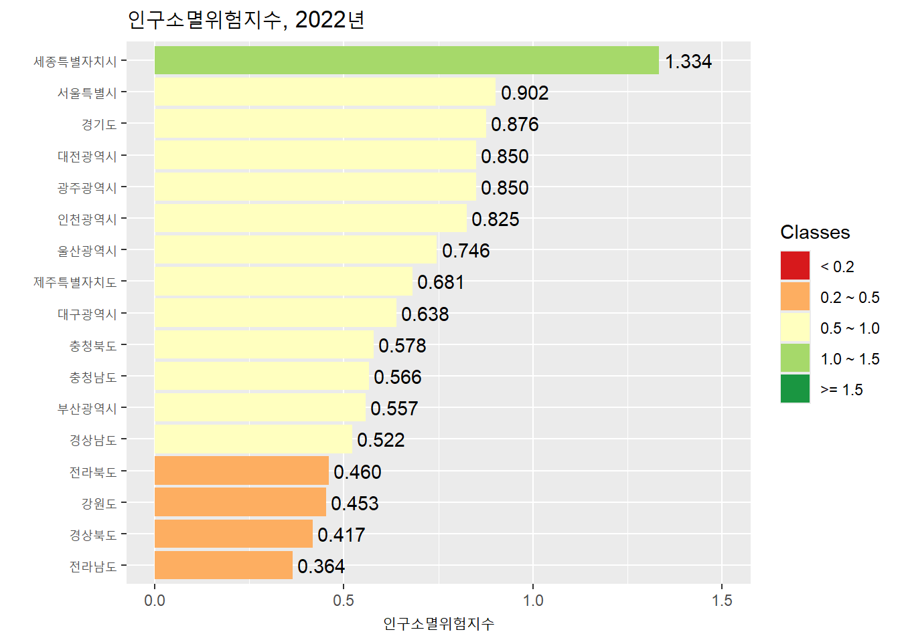

데이터 수집하기
실습 개요
이 실습은 R로 데이터를 수집하는 과정을 다루다. R을 활용한 데이터 수집은 다양한 방법으로 진행될 수 있지만 여기서는 웹상의 데이터 파일 불러오기, 웹 스크레이핑, API를 이용하는 방식에 집중한다. 실습의 시작은 tidyverse 패키지를 불러오는 것이다.
1 웹상의 데이터 파일 불러오기
아마도 데이터를 수집하는 가장 단순한 방법은 웹상에 파일 형태로 존재하는 데이터를 R에서 불러오는 것일 것이다. readr 패키지에서 제공하는 다양한 데이터 불러오기 함수(예: read_csv())를 데이터의 URL에 적용하면 손쉽게 데이터를 획득할 수 있다.
students <- read_csv("https://pos.it/r4ds-students-csv")
students# A tibble: 6 × 5
`Student ID` `Full Name` favourite.food mealPlan AGE
<dbl> <chr> <chr> <chr> <chr>
1 1 Sunil Huffmann Strawberry yoghurt Lunch only 4
2 2 Barclay Lynn French fries Lunch only 5
3 3 Jayendra Lyne N/A Breakfast and lunch 7
4 4 Leon Rossini Anchovies Lunch only <NA>
5 5 Chidiegwu Dunkel Pizza Breakfast and lunch five
6 6 Güvenç Attila Ice cream Lunch only 6 그런데 엑셀 형식의 파일은 readxl 패키지가 제공하는 read_excel() 함수를 이용해 막바로 데이터를 불러오는 것이 불가능하다.
library(readxl)
read_excel("https://github.com/awalker89/openxlsx/raw/master/inst/readTest.xlsx")Error: `path` does not exist: 'https://github.com/awalker89/openxlsx/raw/master/inst/readTest.xlsx'openxlsx 패키지는 이러한 문제를 해결할 수 있게 해준다. 정말 다양한 함수를 제공하지만 read.xlsx() 함수가 URL을 통해 엑셀 데이터를 불러오는데 사용된다.
library(openxlsx)
xlsx_data <- read.xlsx("https://github.com/awalker89/openxlsx/raw/master/inst/readTest.xlsx")
xlsx_data Var1 Var2 Var3 Var4 Var5 Var6 Var7
1 TRUE 1 1.00 a 42042 3209324 This NA
2 TRUE NA NA b 42041 <NA> NA
3 TRUE 2 1.34 c 42040 <NA> NA
4 FALSE 2 NA <NA> NA <NA> NA
5 FALSE 3 1.56 e NA <NA> NA
6 FALSE 1 1.70 f 42037 <NA> NA
7 NA NA NA <NA> 42036 <NA> NA
8 FALSE 2 23.00 h 42035 <NA> NA
9 FALSE 3 67.30 i 42034 <NA> NA
10 NA 1 123.00 <NA> 42033 <NA> NA2 웹스크레이핑
웹스크레이핑(web scraping)이란 웹페이지로부터 특정한 데이터를 추출하는 것을 의미한다. R에서 웹스크레이핑은 rvest 패키지가 답당하는데, reaxl 패키지와 마찬가지로 tidyverse의 핵심 패키지는 아니기 때문에 따로 불러와야 한다.
2.1 HTML 기초
거의 모든 웹페이지는 HTML(HyperText Markup Language, 하이퍼텍스트 마크업 언어)로 만들어져 있다. HTML은 웹브라우저(web browser)를 통해 표출되는 사항(무엇이 어떻게)을 프로그래밍하는 마크업(markup) 언어이다. 웹스크레이핑 맥락에서 HTML에 대한 몇 가지 기초 사항은 숙지할 필요가 있다.
웹페이지는 태그(tag)로 이루어져 있다. 각 태그는 시작 테그와 종료(끝) 태그로 구성되며, 둘 사이에 콘텐츠가 놓인다. 태그를 중심으로 개별 단위를 엘리먼트(element)라고 부르기도 한다.
-
태그의 종류는 다양하다. 태그는 크게 세 가지로 구분되는데, 최상위인 html 태그, 웹페이지의 전반적인 구조를 결정하는 블록(block) 태그(예: hi, section, p, ol 태그 등), 블록 태그 내부의 특정 부분에만 적용되는 인라인(inline) 태그(예: b, i, a 태그 등)가 있다. 태그는 모두 100개 이상이 존재한다고 하는데, 그 중 많이 사용되는 것들은 다음과 같다.
html 태그: 모든 웹페이지에 존재하는 최상위 태그로, 그 하위에 head 태그와 body 태그를 가져야함.
head 태그: 웹페이지의 제목이나 머릿말과 같은 메타데이터로 구성
body 태그: 본문에 해당하는 부분
title 태그: 타이틀바에 입력될 텍스트 지정
link 태그: 외부 css 파일을 연결
meta 태그: 문서의 다양한 정보를 제공
script 태그: 외부 js 파일을 연결하거나 javascript 코드를 입력
div 태그: 상자 영역을 만듦
span 태그: 요소 일부분만 변경하고자 할 때 사용하는 것으로 인라인(inline tag)의 대표
img 태그: 이미지를 가져옴
-
h 태그: 제목 태그
- h1, h2, h3, h4, h5, h6
table 태그: 표를 나타냄
p 태그: 문단을 표현
ul 태그: 번호가 없는 리스트
ol 태그: 번호가 있는 리스트
li 태그: ul 태그나 ol 태그 내에서 사용
br 태그: 줄 바꿈 기능을 하는 단독 태그
b 태그: 굵은 글씨 지정
i 태그: 이탤릭체 글씨 지정
a 태그: 링크 이동
input 태그: 입력창을 생성
button 태그: 버튼을 생성
select 태그: 선택 박스 창을 생성
form 태그: 데이터 전송
다양한 태그들이 복잡한 다단계 위계 구조를 이룬다.

-
태그는 속성(attribute)을 가질 수 있다.
특별히 중요한 속성: class, identity
p나 div 태그와 같은 블록 태그: height, width, margin, padding
img 태그: src, alt, width, height
a 태그: href
2.2 HTML 요소의 선택
HTML 요소란 태그와 속성으로 확정가능한 HTML의 특정 부분을 의미하는 것으로, 웹스크레이핑의 타깃의 주소와 같은 것이다.
2.2.1 단일 수준에서의 요소 선택
선택 대상을 효과적으로 규정하기 위해 사용되는 것이 CSS(cascading style sheet) 선택자(selector)이다. CSS는 HTML의 시각적 구성을 통제하는 툴인데, html의 특정 부분을 지칭하는 작은 언어(miniature language)를 가지고 있고, CSS 선택자라 부른다.
| 선택 대상 | 선택자(selector) | 결과 |
|---|---|---|
| 태그(tag) | table | 모든 table 요소를 선택 |
| 클래스(class) | .className | “className”이라는 class 속성을 갖는 모든 요소 |
| 아이디(id) | #idName | “idName”이라는 id 속성을 갖는 모든 요소 |
| tag과 class의 결합 | tag.class | “tag”이라는 tag의 “class”라는 class 속성을 가진 모든 요소 |
| class1와 class2의 결합 | .class1.class2 | “class1”이라는 이름의 class 속성과 “class2”라는 이름의 class 속성을 동시에 갖는 모든 요소 |
2.2.2 하위 요소의 선택
동일 수준에서 한 요소를 선택한 이후 그 하위에 있는 요소를 위계적으로 선정하는 과정이다. 만약 div 태그의 하위에 있는 span 태그의 하위에 있는 a 태그를 선택하고 싶다면 태그의 위계에 따라 요소를 나열하면 된다(div span a).
2.2.3 정확한 선택자의 확인
정확한 선택자를 확인하는 것이 웹스크레이핑의 관건이다. 보통 해당 웹페이지에서 오른쪽 마우스 버튼을 누른 뒤 “검사”를 선택하여 이리저리 살펴보아야 한다. SelectorGadget과 같은 브라우저 확장 프로그램이 도움이 될 수 있다. 링크로 들어가면 간단한 사용 방법을 살펴볼 수 있다.
2.3 웹스크레이핑 단계와 rvest 함수
1단계는 웹페이지 읽기 단계이다.
read_html() 함수를 이용해 웹페이지를 읽어 들인다.
2단계는 HTML 요소의 선택 단계이다.
-
하나의 요소만 리턴
주로 관측개체를 추출할 때 사용
-
요소의 리스트를 리턴
주로 변수를 추출할 때 사용
3단계는 하위 요소의 선택 단계이다. 여기에는 두 가지 방식이 있다.
html_element()함수나html_elements()함수 속에 요소들을 위계에 따라 나열을 하되 요소 사이에 공란을 둔다.파이프 오퍼레이터를 활용한다.
4단계는 요소로부터 데이터를 추출하는 단계이다. 다양한 함수를 적용할 수 있다.
html_table(): 테이블 데이터를 추출한다.html_text(): 텍스트 데이터를 추출한다.html_text2(): 불필요한 부호와 공란을 제거한 텍스트 데이터를 추출한다.html_attr()과html_attrs(): 하위 속성 데이터를 추출한다.
2.4 간단한 웹스크레이핑의 예
2.4.1 데이터
rvest 패키지에 내장되어 있는 예제(starwars)를 활용하여 실습을 진행한다. 웹페이지에 접속하여 어떤 내용으로 구성되어 있는지 확인한다. 앞에서 언급한 것처럼, 오른쪽 마우스 버튼을 누르고 “검사”를 선택하면 해당 패이지의 HTML 구조를 살펴볼 수 있다. 모든 영화가 다음과 같은 동일한 구조를 가지고 있음을 확인한다.
<section>
<h2 data-id="1">The Phantom Menace</h2>
<p>Released: 1999-05-19</p>
<p>Director: <span class="director">George Lucas</span></p>
<div class="crawl">
<p>...</p>
<p>...</p>
<p>...</p>
</div>
</section>우리의 웹스크레이핑 목적은 7개의 영화별로 제목(title), 연도(year), 감독(director), 요약(intro) 속성을 갖는 데이터 프레임을 생성하는 것이다.
2.4.2 웹스크레이핑의 과정
read_html() 함수를 이용하여 웹페이지를 읽어 들인다.
url <- "https://rvest.tidyverse.org/articles/starwars.html"
html <- read_html(url)“section” 태그 요소를 선택한다.
section <- html |>
html_elements("section")
section{xml_nodeset (7)}
[1] <section><h2 data-id="1">\nThe Phantom Menace\n</h2>\n<p>\nReleased: 1999 ...
[2] <section><h2 data-id="2">\nAttack of the Clones\n</h2>\n<p>\nReleased: 20 ...
[3] <section><h2 data-id="3">\nRevenge of the Sith\n</h2>\n<p>\nReleased: 200 ...
[4] <section><h2 data-id="4">\nA New Hope\n</h2>\n<p>\nReleased: 1977-05-25\n ...
[5] <section><h2 data-id="5">\nThe Empire Strikes Back\n</h2>\n<p>\nReleased: ...
[6] <section><h2 data-id="6">\nReturn of the Jedi\n</h2>\n<p>\nReleased: 1983 ...
[7] <section><h2 data-id="7">\nThe Force Awakens\n</h2>\n<p>\nReleased: 2015- ...제목과 감독명에 대한 선택자가 각각 h2 태그와 director 클래스에 들어가 있음을 알 수 있다. html_element()와 html_text2() 함수를 활용하여 데이터를 추출한다.
section |>
html_element("h2") |>
html_text2()[1] "The Phantom Menace" "Attack of the Clones"
[3] "Revenge of the Sith" "A New Hope"
[5] "The Empire Strikes Back" "Return of the Jedi"
[7] "The Force Awakens" section |>
html_element(".director") |>
html_text2()[1] "George Lucas" "George Lucas" "George Lucas" "George Lucas"
[5] "Irvin Kershner" "Richard Marquand" "J. J. Abrams" 2.5 웹스크레이핑의 실제 1: 테이블이 하나 있는 경우
위키피디어의 한 항목(List of countries and dependencies by population)에는 표 하나가 포함되어 있다. 해당 표의 데이터를 수집한다.
url <- "https://en.wikipedia.org/wiki/List_of_countries_and_dependencies_by_population"
my_table <- url |>
read_html() |>
html_element("table") |>
html_table()
my_table# A tibble: 241 × 7
`` Location Population `% ofworld` Date Source (official or …¹ ``
<chr> <chr> <chr> <chr> <chr> <chr> <chr>
1 – World 8,104,769… 100% 5 Ma… UN projection[3] ""
2 1/2 [b] China 1,409,670… 17.4% 31 D… Official estimate[5] "[c]"
3 1/2 [b] India 1,400,744… 17.3% 1 Ma… Official projection[6] "[d]"
4 3 United Sta… 335,893,2… 4.1% 1 Ja… Official estimate[7] "[e]"
5 4 Indonesia 279,118,8… 3.4% 1 Ju… National annual proje… ""
6 5 Pakistan 241,499,4… 3.0% 1 Ma… 2023 census result[9] "[f]"
7 6 Nigeria 223,800,0… 2.8% 1 Ju… Official projection[1… ""
8 7 Brazil 203,080,7… 2.5% 1 Au… 2022 census result[11] ""
9 8 Bangladesh 169,828,9… 2.1% 14 J… 2022 census result[12] ""
10 9 Russia 146,150,7… 1.8% 1 Ja… Official estimate[13] "[g]"
# ℹ 231 more rows
# ℹ abbreviated name: ¹`Source (official or fromthe United Nations)`my_table <- my_table |>
select(-1, -7) |>
rename(
location = "Location",
population = "Population",
pop_pct = "% ofworld",
date = "Date",
source = "Source (official or fromthe United Nations)"
) |>
mutate(
population = str_remove_all(population, ","),
population = as.numeric(population),
pop_pct = str_remove(pop_pct, "%"),
pop_pct = as.numeric(pop_pct),
date = dmy(date)
)
my_table# A tibble: 241 × 5
location population pop_pct date source
<chr> <dbl> <dbl> <date> <chr>
1 World 8104769000 100 2024-05-05 UN projection[3]
2 China 1409670000 17.4 2023-12-31 Official estimate[5]
3 India 1400744000 17.3 2024-03-01 Official projection[6]
4 United States 335893238 4.1 2024-01-01 Official estimate[7]
5 Indonesia 279118866 3.4 2023-07-01 National annual projection[8]
6 Pakistan 241499431 3 2023-03-01 2023 census result[9]
7 Nigeria 223800000 2.8 2023-07-01 Official projection[10]
8 Brazil 203080756 2.5 2022-08-01 2022 census result[11]
9 Bangladesh 169828911 2.1 2022-06-14 2022 census result[12]
10 Russia 146150789 1.8 2024-01-01 Official estimate[13]
# ℹ 231 more rows2.6 웹스크레이핑의 실제 2: 테이블이 둘 이상인 경우
위키피디어의 한 항목(List of FIPS country codes)에는 동일한 내용에 대해 여러 개의 표가 나타나 있다. 개별 표의 데이터를 수집한 후 결합하여 단일한 데이터 프레임을 구성한다.
url <- "https://en.wikipedia.org/wiki/List_of_FIPS_country_codes"
my_tables <- url |>
read_html() |>
html_elements("table") |>
html_table() |>
bind_rows()
my_tables# A tibble: 283 × 10
Code `Short-form name` .mw-parser-output .n…¹ .mw-parser-output .n…² ...3
<chr> <chr> <chr> <chr> <chr>
1 .mw-pa… Aruba <NA> <NA> <NA>
2 AC Antigua and Barb… <NA> <NA> <NA>
3 AE United Arab Emir… <NA> <NA> <NA>
4 AF Afghanistan <NA> <NA> <NA>
5 AG Algeria <NA> <NA> <NA>
6 AJ Azerbaijan <NA> <NA> <NA>
7 AL Albania <NA> <NA> <NA>
8 AM Armenia <NA> <NA> <NA>
9 AN Andorra <NA> <NA> <NA>
10 AO Angola <NA> <NA> <NA>
# ℹ 273 more rows
# ℹ abbreviated names:
# ¹`.mw-parser-output .navbar{display:inline;font-size:88%;font-weight:normal}.mw-parser-output .navbar-collapse{float:left;text-align:left}.mw-parser-output .navbar-boxtext{word-spacing:0}.mw-parser-output .navbar ul{display:inline-block;white-space:nowrap;line-height:inherit}.mw-parser-output .navbar-brackets::before{margin-right:-0.125em;content:"[ "}.mw-parser-output .navbar-brackets::after{margin-left:-0.125em;content:" ]"}.mw-parser-output .navbar li{word-spacing:-0.125em}.mw-parser-output .navbar a>span,.mw-parser-output .navbar a>abbr{text-decoration:inherit}.mw-parser-output .navbar-mini abbr{font-variant:small-caps;border-bottom:none;text-decoration:none;cursor:inherit}.mw-parser-output .navbar-ct-full{font-size:114%;margin:0 7em}.mw-parser-output .navbar-ct-mini{font-size:114%;margin:0 4em}vteGeocode systems...1`,
# ²`.mw-parser-output .navbar{display:inline;font-size:88%;font-weight:normal}.mw-parser-output .navbar-collapse{float:left;text-align:left}.mw-parser-output .navbar-boxtext{word-spacing:0}.mw-parser-output .navbar ul{display:inline-block;white-space:nowrap;line-height:inherit}.mw-parser-output .navbar-brackets::before{margin-right:-0.125em;content:"[ "}.mw-parser-output .navbar-brackets::after{margin-left:-0.125em;content:" ]"}.mw-parser-output .navbar li{word-spacing:-0.125em}.mw-parser-output .navbar a>span,.mw-parser-output .navbar a>abbr{text-decoration:inherit}.mw-parser-output .navbar-mini abbr{font-variant:small-caps;border-bottom:none;text-decoration:none;cursor:inherit}.mw-parser-output .navbar-ct-full{font-size:114%;margin:0 7em}.mw-parser-output .navbar-ct-mini{font-size:114%;margin:0 4em}vteGeocode systems...2`
# ℹ 5 more variables: ...4 <chr>, ...5 <chr>, ...6 <chr>, X1 <chr>, X2 <chr>my_tables <- my_tables |>
select(1, 2) |>
rename(
code = "Code",
short_name = "Short-form name"
) |>
mutate(
code = str_extract(code, "[A-Z][A-Z]")
)
my_tables# A tibble: 283 × 2
code short_name
<chr> <chr>
1 AA Aruba
2 AC Antigua and Barbuda
3 AE United Arab Emirates
4 AF Afghanistan
5 AG Algeria
6 AJ Azerbaijan
7 AL Albania
8 AM Armenia
9 AN Andorra
10 AO Angola
# ℹ 273 more rows2.7 웹스크레이핑의 실제 3: 네이버 뉴스 데이터 수집하기
2.7.1 기간을 설정하지 않은 경우
네이버 신문(https://news.naver.com/)에 키워드(예: 지방소멸)로 검색한 기사를 제목과 내용으로 나누어 데이터를 수집한다.
url <- "https://search.naver.com/search.naver?where=news&ie=utf8&sm=nws_hty&query=%EC%A7%80%EB%B0%A9%EC%86%8C%EB%A9%B8"
title <- url |>
read_html() |>
html_elements(".news_tit") |>
html_text2()
contents <- url |>
read_html() |>
html_elements(".dsc_txt_wrap") |>
html_text2()
my_news <- tibble(title, contents)
my_news# A tibble: 10 × 2
title contents
<chr> <chr>
1 "[지방소멸 경고등] 위기 속 작은 희망…영월 옥동초교의 실험" "연합뉴…
2 "지자체 ‘지방소멸기금’ 최대 160억 지원" "지방소…
3 "접경지, 청년 창업 ‘확대’…지방소멸 ‘극복’ 시도" "[앵커] …
4 "우수 지자체에 지방소멸대응기금 집중 지원한다…배분체계 개선" "행정안…
5 "저출산율·양극화… 韓사회는 왜 소멸의 길을 가고 있나" "사람들…
6 "[인터뷰] 천하람 \"저출산·지방소멸·정치개혁…미래세대 이슈에 집중\"" "또 지방…
7 "[매일경제TV] 지방 소멸 막기 위한 정책" "인구 감…
8 "지역소멸 시대, 농협의 역할에 변화가 필요하다" "농식품…
9 "여당 재선 엄태영 \"지방소멸위기 처한 제천·단양 반드시 살리겠다\"" "'실천하…
10 "“강진군, 지역소멸 위기 극복 인구정책 롤모델 급부상”" "군에 따…한 번에 10개의 케이스밖에 수집되지 않는다. 방도를 강구해야 한다.
2.7.2 기간을 설정한 경우
2023년 1월 1일부터 2023년 12월 31일까지로 기간을 설정하여 데이터를 수집한다.
start.date <- "2023.01.01"
end.date <- "2023.12.31"
url <- str_c("https://search.naver.com/search.naver?where=news&query=%EC%A7%80%EB%B0%A9%EC%86%8C%EB%A9%B8&sm=tab_opt&sort=0&photo=0&field=0&pd=3&ds=", start.date, "&de=", end.date, "&docid=&related=0&mynews=0&office_type=0&office_section_code=0&news_office_checked=&nso=so%3Ar%2Cp%3Afrom20230101to20231231&is_sug_officeid=0&office_category=0&service_area=0")
title <- url |>
read_html() |>
html_elements(".news_tit") |>
html_text2()
contents <- url |>
read_html() |>
html_elements(".dsc_txt_wrap") |>
html_text2()
my_news <- tibble(title, contents)
my_news# A tibble: 10 × 2
title contents
<chr> <chr>
1 "정부, 지방소멸 극복 위한 '지역활력타운' 확대 추진" "행정안전부…
2 "구미 지방소멸 극복 위해 교육 혁신 나서" "구미시가 …
3 "[이제는 지방시대] 드론을 미래 먹거리로… 포천시 ‘기회발전특구’ … "기회발전특…
4 "순천시, (송년사) 지방소멸을 다시 세울 새로운 이정표" "ⓒ사진제공…
5 "괴산군 \"지방소멸 적극대응 올해 두드러진 성과\"" "충북 괴산…
6 "지역소멸 위기에 희망을 던져준 고향사랑기부" "특히 전남…
7 "[朝鮮칼럼] 인구 소멸·지방 소멸… 역발상으로 넘자" "인구 소멸,…
8 "'밑 빠진 독' 지역소멸 대응책에…'생활인구를 잡아라'" "원래 살던 …
9 "철원플라즈마硏, 지방소멸대응기금사업 2024년 사업설명회 열어" "철원플라즈…
10 "[신년사설] 인구재앙 국가소멸을 두고만 볼 것인가" "이런 가운… 마찬가지로 단 10개의 케이스만 수집되는 상황이 발생함.
3 API의 활용
3.1 정의
API(application programming interface)는 복수의 프로그램들이 서로 상호작용하는 방법을 정의하는 일련의 규칙을 의미한다. 다른 말로 하면 한 프로그램이 다른 프로그램의 기능들을 불러 사용할 수 있게 해주는 통로를 의미한다.
이런 API 개념이 데이터 수집과 관련하여 중요한 의미를 가지는 것은 개방 API(open API) 때문이다. 개방 API는 데이터를 보유하고 있는 공적 기관이 데이터의 사용 권한을 사용자들에게 부여함으로써 데이터에 대한 접근 가능성을 높여주기 때문이다.
만일 개방 API가 존재하는 상황이라면 데이터사이언스의 가장 좋은 데이터 수집 방법은 오픈 API를 활용하는 것이다.
3.2 R에서 API를 활용한 데이터 수집
최근까지 API를 활용한 데이터 수집에는 httr과 jsonlite라는 두 개의 패키지가 함께 사용되었다. 그런데 최근 httr의 완전 업그레이드 버전인 httr2가 선을 보이면서 이 패키지를 단독으로 활용하는 방식이 주목 받고 있다(https://httr2.r-lib.org/). httr2는 R의 tidyverse 운동을 이끌고 있는 해들리 위컴(Hadley Wickham)이 tidyverse의 철학에 맞추어 httr 패키지를 발전시킨 것이다. 이러한 R 패키지를 직접 활용하는 것이 가장 좋은 방법이겠지만, 초보자의 경우 다소간의 어려움을 겪을 수 있다. httr2 함수가 다른 패키지의 함수에 비해 개념적으로 이해하기 어려운 측면이 있고, 데이터를 획득하는 구체적인 과정이 API 마다 조금씩 달라 응용력이 발휘되어야 하는 상황이 발생하기 때문이기도 하다.
이러한 어려움을 들어주기 위해 일종의 연결 패키지들이 개발되어 있는데, 이러한 패키지를 래퍼 패키지(wrapper package)라고 부른다. 래퍼 패키지들은 사용자와 API 수집용 패키지 사이에서 일종의 가교 역할을 하는 것으로 사용자들이 사용하기 편한 함수를 제공함으로써 보다 손쉽게 오픈 API를 활용할 수 있게 도와준다. 예를 들어, 구글맵스플랫폼(Google Maps Platform)에 API로 접근해 다양한 기능을 활용할 수 있게 도와주는 googleway와 같은 패키지가 좋은 예가 될 수 있다.
3.3 API를 활용한 KOSIS 데이터의 수집
KOSIS를 포함한 많은 대한민국의 데이터 포털은 개방 API 서비스를 제공하고 있다. KOSIS는 공유서비스 홈페이지(https://kosis.kr/openapi/)를 통해 Open API를 통한 데이터 수집을 권장하고 있다. 개발 가이드(https://kosis.kr/openapi/devGuide/devGuide_0101List.do)를 통해 R을 포함한 다양한 프로그래밍 언어에서 KOSIS의 개방 API 서비스를 활용하는 구체적인 코드를 제공하고 있기도 하다. 가이드 북을 읽어 보면, 앞에서 언급한 R의 httr, jsonlite, rvest와 같은 패키지가 활용됨을 알 수 있다.
앞에서 설명한 것처럼, API용 패키지를 직접 사용할 수도 있지만, 래퍼 패키지가 존재하기만 한다면 그것을 활용하는 것이 훨씬 손쉬운 옵션일 수 있다. 놀랍게도 한국의 주석훈(Seokhoon Joo)이라는 분이 그러한 기능을 하는 kosis(https://cran.r-project.org/web/packages/kosis/index.html)라는 패키지를 이미 개발해 두었고, 그것을 활용하고자 한다.
실습 주제는 2022년 센서스 인구 기준으로 전국의 17개 시도별 ’지방소멸위험지수’를 계산하고 그래프의 형태로 표현하는 것이다.
3.3.1 KOSIS에서 API KEY 받기
KOSIS 공유서비스 웹페이지(https://kosis.kr/openapi/) 접속
-
상단의 [활용신청] 탭 클릭
- 통계청의 ONE-ID로 통합로그인(없으면 회원가입 필수)
-
활용신청하여 사용자 인증키 획득
- 사용자 인증키는 마이페이지에서 언제든 확인 가능
3.3.2 패키지 설치 및 인증키 등록
우선 kosis 패키지를 오른쪽 하단 윈도우의 Packages 탭을 활용하여 인스톨한다. 이후에 아래와 같이 kosis와 tidyverse 패키지를 불러온다.
kosis 패키지의 kosis.setKey() 함수를 이용하여 인증키를 등록한다. Your Key Here 자리에 부여받은 인증키를 붙여 넣는다.
kosis.setKey(apikey = "Your Key Here")3.3.3 데이터 추출
다양한 방법으로 데이터를 추출할 수 있지만, KOSIS 홈페이지와 kosis 패키지의 특성을 고려할 때, getStatDataFromURL() 함수를 활용하는 것이 가장 좋은 방식인 것으로 보인다. 이 함수를 이용한 데이터 추출은 다음의 두 단계 과정을 거친다.
KOSIS에서 필요한 데이터의 위치에 대한 URL 정보를 획득한다.
getStatDataFromURL()함수를 활용하여 데이터를 추출한다.
다음의 단계를 수행한다.
첫째, KOSIS(https://kosis.kr/)에 로그인한다. 이것은 api key를 활용하기 위한 필수 조건이다.
둘째, 인구 센서스 데이터를 바탕으로 시도별 지방소멸위험지수를 계산하고자 하기 때문에, 최신 인구 센서스의 지역별 20~39세의 여성 인구와 65세 이상의 전체 인구에 대한 데이터가 필요하다. KOSIS 홈페이지를 탐색하여 필요한 데이터가 있는 위치를 찾아간다.
- [국내통계]-[주제별 통계]-[인구]-[인구총조사]-[인구부문]-[총조사인구(2015년 이후)]-[전수부문 (등록센서스, 2015년 이후)]-[전수기본표]-[연령 및 성별 인구]
셋째, ’조회설정’을 클릭하여 다음과 같이 선택한다.
항목: ‘총인구(명)’, ‘총인구_남자(명)’, ’총인구_여자(명)’만 선택(더 많은 항목을 선택하면 데이터가 너무 커 에러가 발생)
행정구역별(읍면동): ‘1 레벨’과 ’2 레벨’ 선택(’1 레벨’은 시도 수준, ’2 레벨’은 시군구 수준)
넷째, ‘조회설정’ 창을 없앤 후(조회창의 왼편 가운데의 화살표 클릭), 표의 오른편 상단에 있는 여러개 탭 중 ‘OPENAPI’ 탭을 클릭한다. 다음과 같이 선택한다.
조회기간 설정: ‘기간설정’ 버턴을 누른 후, 기간설정이 2022~2022년인지 확인한다.
응답필드 설정: 하나씩 눌러 모두 선택한 후, ‘URL생성’ 탭을 클릭한다. 그리고 나서 ‘URL 복사’ 탭을 클릭한다. URL 속에 api key가 포함되어 있음을 확인한다.
다섯째, 다음과 같이 실행한다. “Your URL” 자리에 복사한 URL를 붙여 넣는다.
your_url <- "Your URL"
data_api <- getStatDataFromURL(url = your_url)3.3.4 데이터 정리 및 변형
아래와 같이 데이터를 정리 및 변형한다. 최종적으로 지역별 지역소멸위험지수를 산출한다. 조교의 도움을 받아, 각 과정에서 무엇을 한 것인지 이해한다.
data <- data_api |>
select(C1, C1_NM, C2, C2_NM, ITM_ID, ITM_NM, DT) |>
mutate(
across(c(C1, DT), as.numeric),
ITM_ID = case_match(
ITM_ID, "T00" ~ "T",
"T01" ~ "M",
"T02" ~ "F"),
) |>
unite("gender_age", ITM_ID, C2_NM, sep = "_") |>
pivot_wider(
id_cols = c(C1, C1_NM),
names_from = gender_age,
values_from = DT
) |>
mutate(
index = (`F_20~24세` + `F_25~29세` + `F_30~34세` + `F_35~39세`) / `T_65세이상`
) |>
select(
C1, C1_NM, index
) 시도 데이터와 시군구 데이터를 분리하여 저장한다.
3.3.5 그래프 작성
인구소멸위험지수 연구에서 주로 사용되는 5개의 위험도 클래스의 구분법을 적용하고, 위험도 클래스별로 특정한 색상을 적용하고, 그래프의 범례에 5개의 클래스가 모두 나타나게 하려다보니 코드가 조금 복잡해졌다. 그러나 익혀두면 다른 그래프 작성에 도움이 되니, 조교의 도움을 받아 살펴보도록 한다.
data_sido <- data_sido |>
mutate(
index_class = case_when(
index < 0.2 ~ "1",
index >= 0.2 & index < 0.5 ~ "2",
index >= 0.5 & index < 1.0 ~ "3",
index >= 1.0 & index < 1.5 ~ "4",
index >= 1.5 ~ "5"
),
index_class = factor(index_class, levels = as.character(1:5))
)
class_color <- c("1" = "#d7191c", "2" = "#fdae61",
"3" = "#ffffbf", "4" = "#a6d96a",
"5" = "#1a9641")
data_sido |>
ggplot(aes(x = index, y = fct_reorder(C1_NM, index))) +
geom_col(aes(fill = index_class), show.legend = TRUE) +
geom_text(aes(label = format(round(index, digits = 3),
nsmall = 3)), hjust = -0.1) +
scale_x_continuous(limits = c(0, 1.5)) +
scale_fill_manual(name = "Classes",
labels = c("< 0.2", "0.2 ~ 0.5", "0.5 ~ 1.0",
"1.0 ~ 1.5", ">= 1.5"),
values = class_color, drop = FALSE) +
labs(title = "인구소멸위험지수, 2022년",
x = "인구소멸위험지수",
y = "")